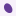

Teach a tiny network to recognize irregular nuclear contours. Watch it learn. Then show it something new.

Regular→ learn the differenceIrregular
THE IMAGE BANK
A hundred nuclei. One narrow question.
Is the contour regular or irregular? These are deliberately simple, computer-generated shapes, not patient images. Their labels come from the shape generator. Irregular does not mean malignant.
80 to learn from
40 regular + 40 irregular. Each shape becomes a 16 × 16 image. Click a training nucleus to inspect it.
20 to try afterward
10 regular + 10 irregular, reserved before training. Related shape pairs stay in the same split.
A fair starting point
Size, elongation, position and stain vary. Nuisance variables are matched across labels within each pair.
The training bank / 80 images
RegularIrregular
20
The test bank is reserved.
Open stage 03 to evaluate the model. Test images and labels never enter a gradient update or the input scaler.
THE MOMENT OF TRUTH
Learning, or remembering?
Training pauses for this evaluation. The weights stay fixed: each test nucleus gets a prediction, with no answer fed back into the model.
?
Twenty new nuclei are waiting.
You can test even an untrained model to establish a baseline.
TEST ACCURACY——
IRREGULAR SENSITIVITY—Irregular nuclei called irregular
REGULAR SPECIFICITY—Regular nuclei called regular
Every nucleus changes overall test accuracy by 5 percentage points. Reusing this set to choose settings turns it into development data; a final evaluation would need another untouched set.
LIVE MODEL
Watch the connections change.
Ready to learn
EPOCH0
UPDATES0
TRAIN ACCURACY—
TRAIN LOSS ↓—
PARAMETERS5
A prediction, from the inside
SELECTED NUCLEUS
N001Regular
Smooth source drawing. The model receives its 16 × 16 raster.
Positive weightNegative weightWidth = magnitude
← Swipe the network to inspect every node →
MODEL OUTPUT · P(IRREGULAR)
——
Regular · 01 · Irregular
The threshold changes the call, not the learned weights. The sigmoid output is a model score, not a calibrated clinical probability.
LOOK INSIDE A NEURON
The output neuron's weights
−0+
Each square is one actual learned input weight. Click the map to inspect it.
Show the calculation
Inputs are centered and scaled using only the selected training nuclei. A positive weight raises this neuron's score as its input increases; a hidden neuron can still have a negative output weight.
THE LEARNING CURVE
Is the error getting smaller?
Train loss
Try “1 update”.
See one weight change using the real gradient of a batch.
Loss is mean binary cross-entropy, before the L2 penalty. Training accuracy is measured on the same nuclei used to fit the model.
READ THE IMAGE FEEDBACK
What changes its mind?
Choose Influence beneath the image. We erase each 2 × 2 patch in turn, then run a fresh forward pass.
Teal: removing this patch lowers P(irregular). Coral: removing it raises P(irregular).
This is a perturbation experiment, not an attention map or proof of a biological explanation. Erasing a patch may create an artificial hole.
How to read influenceTeal: erasing the patch lowers P(irregular). Coral: erasing it raises P(irregular). Hover, tap or choose a patch below. This perturbation can create artificial holes; it is not an attention map.
Try a small change to this nucleusPosition & stain →
A temporary perturbation of the selected image. This does not change the dataset, train the model or enter the reported accuracy.
The training bench / click a nucleus
Border and symbol show correctness. The percentage is P(irregular), not confidence in the displayed label.
No nuclei match this filter.
Looking good on the training set?
Now ask whether it learned something that transfers.